Everything on the reference brand board (reference/aira-brand-board.png) has been transcribed into exact values here: hex codes, typefaces, component styles, logo variants. Engineering should treat section 10 (copy) and section 11 (paths) as the spec for the landing-page rebrand ticket. Design should treat sections 4 to 9 as the visual identity brief.
voice.md is approved it supersedes section 3. Stage 3 (visual brief) will point at this document and the assets under brand/.Aira (pronounced AIR-uh). Reads as "AI" + "era", and as "air": light, clear, nothing hidden.
Project management for work done by AI agents. Framed inside Jira's category, owning one sub-segment.
Bridza. The rename is complete for brand purposes; internal identifiers (repo, .bridza/ folder, branch prefix) are unchanged until a separate migration.
Aira: project management for the AI era. Agents do the work in small git-backed stages. You approve every handoff.
Frame: Jira for the AI era.
Marketing line: Smarter planning. Faster execution. Powered by AI.
Hero line: From ideas to impact.
Product line: Small stages. Real gates. Git as truth.
Rhythm: Plan · Track · Ship
PreciseGroundedQuietly confidentCraft-firstHonest about control
Aira is the calm reviewer's tool, not the hype-driven agent. It shows the record instead of claiming the result.
Method: April Dunford, Obviously Awesome. Full document: brand-positioning/outputs/positioning.md.
Aira is project management for the AI era: a board where AI agents do the work in small, git-backed stages and a human approves each handoff.
| Alternative | Where it breaks |
|---|---|
| Jira / Linear / Asana | The assignee is a human. No first-class way to hand a ticket to an agent, gate its output, or attribute cost per step. |
| AI coding agents run by hand | One prompt, one 20-file diff. No stages, no per-step review, no record. |
| Cloud agent platforms | Code leaves the machine. You review the end result, not each step. |
| AI workflow builders | Built for API pipelines. No git, no diff review, no human gate by default. |
| Docs + chat | Zero provenance, zero reuse. |
The gap: everything is either a tracker that doesn't do the work, or an agent that does the work but can't be tracked, gated, or trusted step by step.
Primary: the solo builder (22 to 45) who already runs AI agents every day, keeps everything in git, and has been burned by an unreviewable mega-diff. Secondary: technical teams of 2 to 10 where the agent is a teammate. Not a fit: enterprise PMOs, non-technical teams without a repo, anyone wanting fully autonomous agents with no review.
Tone anchor: a senior reviewer who has read the diff. Short sentences. Nouns from git and boards. This section is the working draft; the approved brand-voice/outputs/voice.md supersedes it.
Say what the product records: "one diff per stage", "every run commits", "you approve each handoff".
Use exact product nouns: task, stage, gate, artifact, branch, run, pipeline.
Lead with the customer's problem, then the plan: pipeline → stage → gate → ship.
Name Jira once, as a frame ("Jira for the AI era"), then move on to what is ours.
Keep automation honest: "Automate is a switch you flip per stage."
"Revolutionary", "magic", "10x", "autonomous" without a gate in the same sentence.
Imply the AI ships releases on its own.
Feature-parity language against Jira (integrations, permissions, SSO). We don't fight there.
Exclamation marks, emoji in product copy, hype adjectives.
Long paragraphs. If a sentence has two ideas, split it.
| Level | Copy | Where |
|---|---|---|
| Frame (eyebrow) | Jira for the AI era | Under the wordmark, hero eyebrow, social bios |
| Hero headline | From ideas to impact. | Landing hero H1 ("impact" in gradient) |
| Alt headline | Project management for the AI era. | Download page, App Store style listings |
| Subhead / elevator pitch | Aira is project management for the AI era. Agents do the work in small, git-backed stages. You approve every handoff. | Hero paragraph, README intro, meta description |
| Marketing triplet | Smarter planning. Faster execution. Powered by AI. | Brand board, ads, OG image |
| Rhythm | Plan · Track · Ship | Hero footer, section labels, nav |
| Product line | Small stages. Real gates. Git as truth. | In-app onboarding, empty states |
| Proof points | One small diff per stage · Every run commits to a task branch · Human gate by default · Cost and time per stage · Runs Claude Code, opencode or any CLI · Local-first, nothing leaves your machine | Feature grid, comparison page |
| Use | Instead of |
|---|---|
| stage, handoff, gate | step, phase, checkpoint, approval flow |
| task, board, pipeline | ticket, kanban, workflow (except when explaining Jira parity) |
| agent, AI CLI | bot, copilot, assistant (except "AI Assistant" nav label in product) |
| approve, review, sign off | validate, confirm, accept |
| on your machine, in git | locally, offline, secure |
The mark is an A built from two strokes: a blue leg that hooks at the foot and rises to the apex, and a straight purple leg falling from the apex. It is both a letter and a rising line (ideas → impact). The wordmark is Inter Bold, tracking −3%.
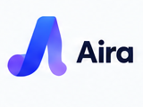
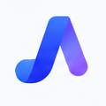
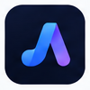
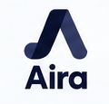
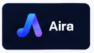
#F8FAFC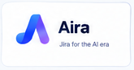
#0B1120; tagline under wordmark in Slatelogos/aira-lockup-horizontal-on-light.svg| File | Use |
|---|---|
logos/aira-mark.svg | Gradient mark, 64×64 viewBox. Inline in HTML or use as <img>. |
logos/aira-mark-mono.svg | Single-colour mark using currentColor. Header on coloured backgrounds, print. |
logos/aira-lockup-horizontal-on-light.svg / -on-dark.svg | Mark + "Aira" wordmark. Text is live (Inter must be loaded). |
logos/aira-app-icon.svg + png/aira-app-icon-{256,512,1024}.png | Desktop app icon (Electron build resources, macOS/Windows/Linux). |
logos/favicon.svg + png/favicon-{32,64,180}.png | Browser favicon, Apple touch icon, PWA icon. |
logos/png/aira-mark-{512,1024}.png | Raster mark on transparent, for social avatars and OG images. |
Six brand colours from the board. Blue leads, Purple accents, Cyan signals success and "AI is working". Dark Navy is the product's default ground; Light is the marketing ground.
#4F7BFF#8B5CF6#06D6A0#0B1120#64748B#F8FAFClinear-gradient(90deg, #4F7BFF 0%, #8B5CF6 100%). Used on the primary button, the mark, the hero highlight word, and the wave motif. Angle 135° when applied to large surfaces.
The app already runs on tokens in src/index.css (Tailwind v4 @theme). Replace the violet values with these. Names stay the same so no component changes.
| Token | Dark (default) | Light (data-theme="light") | Role |
|---|---|---|---|
--color-base | #0B1120 Dark Navy | #FFFFFF | Page background |
--color-surface | #111A2E | #F8FAFC Light | Cards, sidebar, inputs |
--color-line | #1E293B | #E2E8F0 | Borders, dividers |
--color-ink | #F8FAFC Light | #0B1120 Dark Navy | Primary text |
--color-ink-dim | #94A3B8 | #475569 | Secondary text |
--color-ink-faint | #64748B Slate | #94A3B8 | Placeholders, tertiary |
--color-accent | #4F7BFF Primary Blue | #4F7BFF Primary Blue | Links, focus ring, active nav |
--color-accent-2 (new) | #8B5CF6 Purple | #8B5CF6 Purple | Gradient end, AI highlights |
--color-accent-soft | #1E2A5A | #DBE4FF | Chip and pill backgrounds |
--color-on-accent | #FFFFFF | #FFFFFF | Text on accent/gradient |
--color-success (new) | #06D6A0 Cyan | #06D6A0 Cyan | Done state, positive deltas, "AI ready" |
Accessibility. Primary Blue on white is 4.6:1 (AA for text ≥ 14 pt bold or 18 pt). For body-size links on white use #3B63E6. Light on Dark Navy is 17:1. Never set body text in Purple or Cyan.
AIBugFeatureTask
| Tag | Text | Background |
|---|---|---|
| AI | #1D4ED8 | #DBE4FF |
| Bug | #B91C1C | #FEE2E2 |
| Feature | #047857 | #D1FAE5 |
| Task | #1D4ED8 | #DBEAFE |
Aa Bb Cc Dd Ee Ff Gg Hh Ii Jj Kk Ll Mm Nn Oo Pp Qq Rr Ss Tt Uu Vv Ww Xx Yy Zz 0 1 2 3 4 5 6 7 8 9
Aa Bb Cc Dd Ee Ff Gg Hh Ii Jj Kk Ll Mm Nn Oo Pp Qq Rr Ss Tt Uu Vv Ww Xx Yy Zz 0 1 2 3 4 5 6 7 8 9
Aa Bb Cc Dd Ee Ff Gg Hh Ii Jj Kk Ll Mm Nn Oo Pp Qq Rr Ss Tt Uu Vv Ww Xx Yy Zz 0 1 2 3 4 5 6 7 8 9
| Role | Size / line | Weight | Tracking | Tailwind |
|---|---|---|---|---|
| Display (hero H1) | 60 / 64 px (mobile 40 / 44) | 700 | −0.03em | text-6xl font-bold tracking-tight |
| H2 | 36 / 40 | 700 | −0.02em | text-4xl font-bold tracking-tight |
| H3 | 24 / 32 | 600 | −0.01em | text-2xl font-semibold |
| Lead | 18 / 28 | 400 | 0 | text-lg text-ink-dim |
| Body | 16 / 24 | 400 | 0 | text-base |
| Small / caption | 14 / 20 · 12 / 16 | 500 | 0 | text-sm · text-xs |
| Eyebrow / label | 12 / 16 | 600 | +0.06em uppercase | text-xs font-semibold uppercase tracking-wider |
| Code | 13 / 20 | 400 | 0 | font-mono text-[13px] |
Both families are already declared in src/index.css (--font-sans, --font-mono). Load Inter 400/500/600/700 and JetBrains Mono 400/500 from Google Fonts or self-host in public/fonts/. Wordmark uses Inter 700 at −3% tracking.
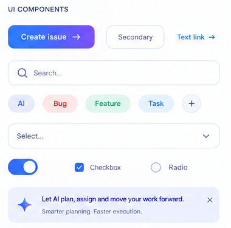
Create issue →SecondaryText link →
| Variant | Spec |
|---|---|
| Primary | Brand gradient fill, white text, 600 weight, radius 8 px, padding 10×18 px, trailing arrow optional. Hover: +6% brightness. Focus: 2 px Primary Blue ring at 40%. |
| Secondary | 1 px Slate/30 border, transparent fill, ink text. Hover: border Primary Blue. |
| Text link | Primary Blue, 500 weight, arrow suffix. Underline on hover only. |
Radius 8 px, 1 px line border, 12 px horizontal padding, 40 px height. Search has a leading magnifier icon. Focus: Primary Blue border + 3 px ring at 25%.
Toggle track 40×22 px, on = Primary Blue. Checkbox 16 px, radius 4 px, checked = Primary Blue with white tick. Radio 16 px, checked = Primary Blue ring.
Surface tint #EEF2FF (light) / #141C3A (dark), sparkle icon in Primary Blue, title 600, one line of Slate body, dismiss ×. Copy example: "Let AI plan, assign and move your work forward."
| Token | Value |
|---|---|
| Radius: control / card / modal / pill | 8 px / 12 px / 16 px / 999 px |
| Spacing scale | 4, 8, 12, 16, 24, 32, 48, 64 px |
| Shadow (light only) | 0 1px 2px rgb(11 17 32 / .06), 0 8px 24px rgb(11 17 32 / .08); dark mode uses borders instead of shadows |
| Aura background | Keep .bg-aura; accent radial becomes Primary Blue → Purple at 20% over base |
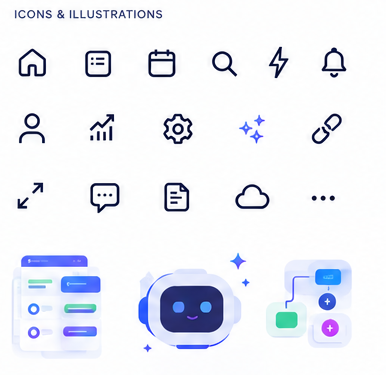
Outline icons, 1.75 px stroke, round caps and joins, 24 px grid, Dark Navy on light / Light on dark. This matches Lucide almost exactly; use Lucide (lucide-react) as the icon set. Board set: home, list-checks, calendar, search, zap, bell, user, trending-up, settings, sparkles, link, maximize, message-square, file-text, cloud, more-horizontal.
A four-point sparkle (sparkles) in Primary Blue marks anything the agent does. It is the only icon allowed to be filled with brand colour.
Flat, rounded, two-tone: Primary Blue / Purple objects on Light or Dark Navy cards, Cyan for one accent element, subtle 1 px Slate strokes. No gradients inside illustrations except the brand gradient on a single hero object. Subjects: boards, cards, the robot mascot (friendly, rounded, blue face), flow nodes and connectors.
The robot is for onboarding, empty states and the "AI Assistant" nav item only. Never on the landing hero, never in the logo lockup.
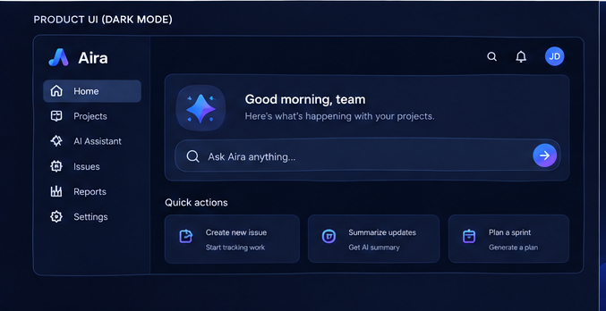
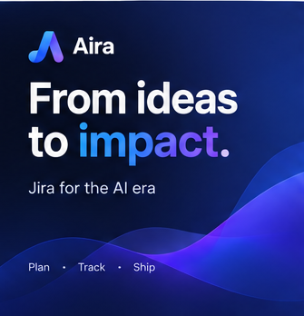
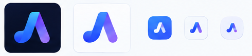
Use logos/aira-app-icon.svg → export 1024 px PNG → build/icon.png (electron-builder derives .icns and .ico). Corner radius is 22% of the side; macOS applies its own mask.
logos/favicon.svg replaces public/favicon.svg. Add png/favicon-180.png as apple-touch-icon.
Dark Navy ground, mark + wordmark top-left, "From ideas to impact." as headline, "Jira for the AI era" beneath, wave motif bottom-right. Build from the hero crop until a dedicated export exists.
Sidebar header: 20 px mark + "Aira" in Inter 600. Replace the current ⎇ Bridza text brand. Keep the pulse animation on the mark.
Exact strings for src/pages/App.tsx, src/pages/Download.tsx and index.html. Copy verbatim; do not paraphrase.
Aira is project management for the AI era. Agents do the work in small, git-backed stages. You approve every handoff.
| Element | Copy |
|---|---|
| Brand | [mark] Aira |
| Nav links | Download · Open the app · GitHub · by erluxman ↗ |
| Element | Copy |
|---|---|
| Eyebrow pill | Jira for the AI era |
| H1 | From ideas to impact. ("impact" gets the gradient text class) |
| Subhead | Aira is project management for the AI era. Agents do the work in small, git-backed stages. You approve every handoff. |
| Primary CTA | Download for macOS (OS-detected: "Download for Windows", "Download for Linux"; fallback "Download") → /download |
| Secondary CTA | Open the app → /app |
| Under CTAs | macOS · Windows · Linux · Free and open source (MIT) |
| Rhythm strip | Plan · Track · Ship |
| Step | Copy |
|---|---|
| Section title | One task. Small stages. Real gates. |
| 1 · Plan | Describe the task. Drop an idea in the inbox. Aira gives it a ref, a branch and a pipeline: engineering, brand, video, research, or one you define. |
| 2 · Track | Agents run each stage. Every stage reads only the previous stage's outputs, runs your AI CLI under its own prompt, and commits one small diff. |
| 3 · Ship | You approve every handoff. Review the diff, flip Automate when you trust a stage, and finalize to merge into main. |
FEATURES in src/data/content.ts)| Title | Body |
|---|---|
| Stages are pure functions | A stage's input is only the previous stage's outputs, never the whole brief. Every review is one focused diff. |
| Git is the database | Each task is a branch and a worktree. Runs commit as they go. Your working tree and HEAD are never touched. |
| Human gate by default | Every stage waits for you until you flip Automate. Failures halt even automated stages. |
| See where time and money go | Time, agent, model and cost are tracked per stage, so the bottleneck is visible. |
| Bring your own AI CLI | Runs Claude Code, opencode, or any tool on your PATH. Swap models without rewiring. |
| On your machine | Aira is a desktop app that drives git and your local CLIs. Nothing leaves your repo. |
Tickets are still tickets. The difference is who does the work and how a human signs off on it. Aira borrows what Jira taught everyone: tasks, boards, stages, refs and a branch per task. It changes the assignee. An agent does the work in stages you can review, and you gate every handoff.
| Element | Copy |
|---|---|
| Title | Ship work you can actually review. |
| Body | Free, open source, runs on macOS, Windows and Linux. |
| CTA | Download Aira |
© 2026 Aira · a tool by erluxman | GitHub · GitCrystal · erluxman.dev
| Element | Copy |
|---|---|
| Pill | Desktop app (or the release tag) |
| H1 | Download Aira ("Aira" in accent) |
| Subhead | Project management for the AI era, running on your machine, on your repos. Install with a click, or one line in the terminal. |
index.html)<title>Aira — Jira for the AI era</title> <meta name="description" content="Aira is project management for the AI era. AI agents do the work in small, git-backed stages and you approve every handoff. Free, open source, runs on your machine."> <meta property="og:title" content="Aira — Jira for the AI era"> <meta property="og:description" content="From ideas to impact. Agents do the work in small git-backed stages. You approve every handoff."> <meta property="og:image" content="https://bridza.erluxman.dev/og.png">
All paths are relative to the repo root. Everything lives inside the task folder so it travels with the branch.
.bridza/pipelines/design-brand/00000122-rebrand-jira-to-aira-for-project/
├── brand-positioning/outputs/positioning.md ← positioning (stage 1, done)
├── brand-voice/outputs/voice.md ← voice (stage 2, pending approval)
└── brand/
├── brand-guidelines.pdf ← this document
├── brand-guidelines.html ← source of this document
├── README.md ← quick index for engineers
├── reference/aira-brand-board.png ← original brand board (1536×1024)
└── logos/
├── aira-mark.svg ← gradient mark (vector)
├── aira-mark-mono.svg ← single-colour mark (currentColor)
├── aira-lockup-horizontal-on-light.svg
├── aira-lockup-horizontal-on-dark.svg
├── aira-app-icon.svg ← desktop icon master
├── favicon.svg ← replaces public/favicon.svg
├── png/ aira-mark-{512,1024}.png · aira-app-icon-{256,512,1024}.png · favicon-{32,64,180}.png
├── logo-primary-light.png ← raster crops from the board
├── logo-mark-only-light.png
├── logo-app-icon-dark.png
├── logo-monochrome-light.png
├── logo-horizontal-lockup-light.png
├── brand-in-action-{dark,light,mark}.png
├── app-icons-favicons.png
├── hero-from-ideas-to-impact-dark.png
├── product-ui-dark-mode.png
├── ui-components.png
├── icons-illustrations.png
└── palette-and-type.png
| Asset | Destination |
|---|---|
logos/favicon.svg | public/favicon.svg |
logos/png/favicon-180.png | public/apple-touch-icon.png + link tag in index.html |
logos/aira-mark.svg | Inline <Logo/> component in src/pages/App.tsx, sidebar brand in src/app/features/nav.jsx |
logos/png/aira-app-icon-1024.png | build/icon.png (electron-builder) |
logos/png/aira-mark-1024.png | GitHub org/repo avatar, social avatars |
| OG image (to be composed) | public/og.png, 1200×630 |
Jira is a trademark of Atlassian Pty Ltd. Aira is not affiliated with or endorsed by Atlassian. Add this line to the landing page footer and the README when the "Jira for the AI era" frame is used publicly.
Inter (SIL Open Font License) and JetBrains Mono (SIL OFL). Both may be self-hosted and redistributed with the app.
| Version | Date | Change |
|---|---|---|
| 1.0 | 2026-09-21 | Initial guidelines from the brand board and positioning.md. |